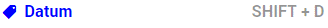
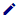
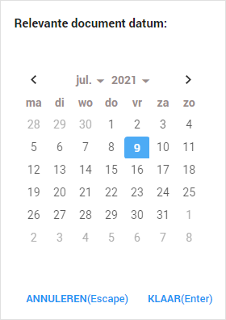

Met de label Datum kunt u de datum van het document noteren. Dit label is automatisch al toegevoegd door ZyLAB ONE. In het geval van emails betreft de datum de zenddatum van de mail. In het geval van documenten is de datum de laatst opgeslagen datum van het document.

Indien u de datum van een document wilt aanpassen doet u dit door middel van het potlood icoontje. 
U krijgt vervolgens een kalender waar u de gewenste datum kunt aanklikken.
